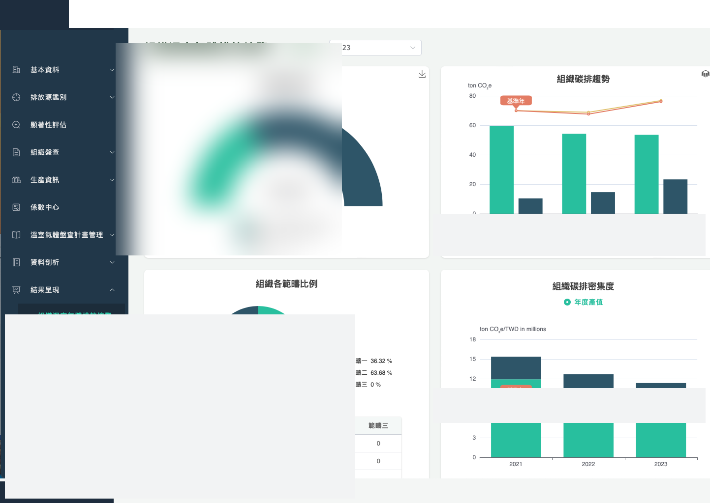
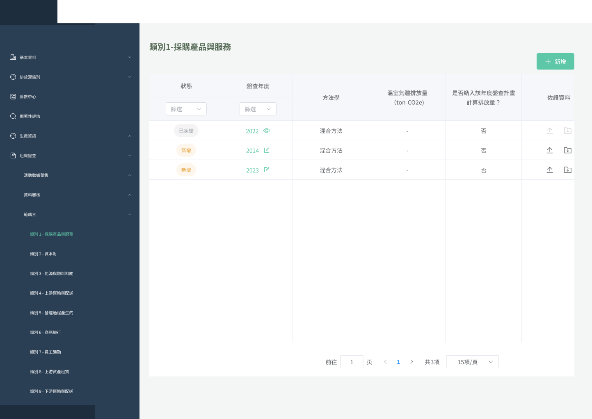
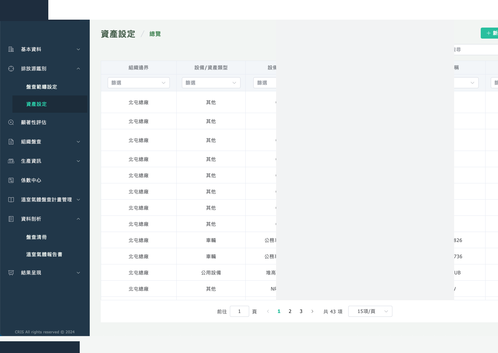

<title>Cindy Chung · UIUX Designer</title>
<meta name="viewport" content="width=device-width, initial-scale=1">
<style>
:root {
  --bg:      #FFFFFF;
  --bg2:     #F7F6F4;
  --bg3:     #EEECEA;
  --text:    #1C1B1E;
  --muted:   #6B6660;
  --faint:   #A09C98;
  --border:  rgba(28,27,30,0.09);
  --shadow:  0 2px 12px rgba(28,27,30,0.07);
  --shadow2: 0 8px 32px rgba(28,27,30,0.10);
  --amber:   #B86E3B;
  --amber-bg:#FBF3EC;
  --amber-bd:rgba(184,110,59,0.18);
  --green:   #3A845A;
  --green-bg:#EEF7F2;
  --green-bd:rgba(58,132,90,0.18);
  --blue:    #3B5BA8;
  --blue-bg: #EEF1FB;
  --blue-bd: rgba(59,91,168,0.18);

  --f: "Microsoft JHengHei","微軟正黑體","PingFang TC","蘋方-繁",sans-serif;
  --mono: "Courier New",Courier,monospace;
}

*,*::before,*::after{box-sizing:border-box;margin:0;padding:0;}
html{scroll-behavior:smooth;}
body{background:var(--bg);color:var(--text);font-family:var(--f);font-size:16px;line-height:1.7;overflow-x:hidden;font-style:normal;}
a{color:inherit;text-decoration:none;}
:focus-visible{outline:2px solid var(--amber);outline-offset:3px;border-radius:2px;}
@media(prefers-reduced-motion:reduce){*{transition-duration:.01ms!important;}}

/* NAV */
.nav{position:fixed;top:0;left:0;right:0;z-index:200;display:flex;justify-content:space-between;align-items:center;padding:1.125rem 3rem;background:rgba(255,255,255,0.92);backdrop-filter:blur(10px);border-bottom:1px solid var(--border);}
.nav-logo{font-weight:700;font-size:1rem;letter-spacing:.01em;}
.nav-links{display:flex;gap:2rem;}
.nav-link{font-size:.875rem;color:var(--muted);transition:color .15s;}
.nav-link:hover{color:var(--text);}

/* HERO */
.hero{min-height:100svh;display:flex;flex-direction:column;justify-content:center;padding:8rem 3rem 5rem;max-width:1100px;margin:0 auto;}
.hero-label{font-size:.8125rem;color:var(--muted);margin-bottom:1.25rem;letter-spacing:.01em;}
.hero-name{font-weight:700;font-size:clamp(4rem,10vw,8rem);line-height:.95;letter-spacing:-.025em;margin-bottom:1.75rem;}
.hero-name em{font-style:normal;color:var(--amber);}
.hero-desc{font-size:1.0625rem;color:var(--muted);max-width:440px;line-height:1.8;margin-bottom:3.5rem;}
.hero-projects{display:grid;grid-template-columns:1fr 1fr;gap:1rem;max-width:640px;}

/* PROJECT ENTRY CARDS */
.pcard{display:block;border:1px solid var(--border);border-radius:10px;padding:1.625rem;background:var(--bg);transition:box-shadow .2s,border-color .2s;}
.pcard:hover{box-shadow:var(--shadow2);border-color:rgba(28,27,30,.16);}
.pcard-num{font-size:.75rem;color:var(--faint);margin-bottom:.625rem;}
.pcard-title{font-weight:700;font-size:1.0625rem;margin-bottom:.25rem;}
.pcard-sub{font-size:.8125rem;color:var(--muted);margin-bottom:1rem;}
.pcard-arrow{font-size:.8125rem;font-weight:500;}
.pcard--carbon .pcard-title,.pcard--carbon .pcard-arrow{color:var(--amber);}
.pcard--mat .pcard-title,.pcard--mat .pcard-arrow{color:var(--green);}
.pcard--carbon{background:var(--amber-bg);border-color:var(--amber-bd);}
.pcard--mat{background:var(--green-bg);border-color:var(--green-bd);}

/* ABOUT */
.about{padding:6rem 3rem;background:var(--bg2);}
.about-inner{max-width:1100px;margin:0 auto;display:grid;grid-template-columns:1fr 1fr;gap:5rem;align-items:start;}
.section-label{font-size:.75rem;color:var(--faint);letter-spacing:.12em;text-transform:uppercase;margin-bottom:1.25rem;}
.about-title{font-weight:700;font-size:1.75rem;line-height:1.25;margin-bottom:1.25rem;}
.about-body{font-size:.9375rem;color:var(--muted);line-height:1.85;margin-bottom:1rem;}
.about-body + .about-body{margin-top:.5rem;}
.cert-badge{display:inline-flex;align-items:center;gap:.5rem;margin-top:1.5rem;padding:.5rem .875rem;background:var(--bg);border:1px solid var(--border);border-radius:6px;font-size:.8125rem;color:var(--muted);}
.cert-icon{width:18px;height:18px;border-radius:3px;background:#4285F4;flex-shrink:0;}

/* STRENGTHS */
.strengths{display:flex;flex-direction:column;gap:.875rem;}
.str-card{background:var(--bg);border:1px solid var(--border);border-radius:8px;padding:1.375rem;}
.str-num{font-size:.7rem;color:var(--faint);margin-bottom:.375rem;}
.str-title{font-weight:700;font-size:.9375rem;margin-bottom:.35rem;}
.str-body{font-size:.8125rem;color:var(--muted);line-height:1.7;}

/* SECTION WRAPPER */
.cs{padding:5rem 3rem;}
.cs-inner{max-width:1100px;margin:0 auto;}
.cs--grey{background:var(--bg2);}
.cs--white{background:var(--bg);}

/* PROJ HERO */
.proj-hero{padding:7rem 3rem 4.5rem;}
.proj-hero--carbon{background:var(--amber-bg);}
.proj-hero--mat{background:var(--green-bg);}
.proj-hero-inner{max-width:1100px;margin:0 auto;}
.proj-tags{display:flex;flex-wrap:wrap;gap:.5rem;margin-bottom:1.75rem;}
.proj-tag{font-size:.75rem;padding:.3em .75em;border-radius:4px;border:1px solid;}
.proj-tag--carbon{border-color:var(--amber-bd);color:var(--amber);}
.proj-tag--mat{border-color:var(--green-bd);color:var(--green);}
.proj-title{font-weight:700;font-size:clamp(2.5rem,5.5vw,4.25rem);line-height:1.05;letter-spacing:-.02em;margin-bottom:.625rem;}
.proj-subtitle{font-size:1rem;color:var(--muted);margin-bottom:2.25rem;}
.proj-meta-row{display:flex;flex-wrap:wrap;gap:2.5rem;}
.meta-k{font-size:.7rem;color:var(--faint);text-transform:uppercase;letter-spacing:.1em;display:block;margin-bottom:.2rem;}
.meta-v{font-size:.875rem;color:var(--muted);}

/* CASE STUDY */
.cs-title{font-weight:700;font-size:1.5rem;line-height:1.25;margin-bottom:1rem;}
.cs-body{font-size:.9375rem;color:var(--muted);line-height:1.85;max-width:680px;}

/* OVERVIEW GRID */
.overview-grid{display:grid;grid-template-columns:1fr 1fr;gap:4rem;align-items:start;}
.fact-grid{display:grid;grid-template-columns:1fr 1fr;gap:.875rem;}
.fact-box{background:var(--bg);border:1px solid var(--border);border-radius:8px;padding:1.25rem;}
.fact-num{font-weight:700;font-size:2rem;line-height:1;margin-bottom:.25rem;}
.fact-num--amber{color:var(--amber);}
.fact-num--green{color:var(--green);}
.fact-desc{font-size:.8125rem;color:var(--muted);}

/* PAIN CARDS */
.pain-grid{display:grid;grid-template-columns:repeat(3,1fr);gap:1rem;margin-top:2rem;}
.pain-card{background:var(--bg);border:1px solid var(--border);border-radius:8px;padding:1.375rem;}
.pain-num{font-size:.7rem;color:var(--faint);margin-bottom:.5rem;display:block;}
.pain-head{font-weight:700;font-size:.9375rem;margin-bottom:.4rem;}
.pain-body{font-size:.8125rem;color:var(--muted);line-height:1.7;}

/* USER CARDS */
.user-grid{display:grid;grid-template-columns:repeat(3,1fr);gap:1rem;margin-top:1.75rem;}
.user-card{background:var(--bg);border:1px solid var(--border);border-radius:8px;padding:1.375rem;}
.user-role{font-weight:700;font-size:1rem;margin-bottom:.3rem;}
.user-desc{font-size:.8125rem;color:var(--muted);line-height:1.7;margin-bottom:.875rem;}
.user-pain-label{font-size:.7rem;color:var(--faint);text-transform:uppercase;letter-spacing:.08em;margin-bottom:.375rem;}
.user-pain{font-size:.8rem;color:var(--muted);line-height:1.65;}
.user-pain li{list-style:none;padding-left:.875rem;position:relative;}
.user-pain li::before{content:'·';position:absolute;left:0;}

/* IA / FLOW */
.ia-flow{display:flex;flex-direction:column;gap:0;margin-top:1.5rem;}
.ia-row{display:grid;gap:1rem;margin-bottom:.5rem;}
.ia-row--2{grid-template-columns:1fr 1fr;}
.ia-row--4{grid-template-columns:repeat(4,1fr);}
.ia-node{background:var(--bg);border:1px solid var(--border);border-radius:8px;padding:1.25rem;}
.ia-node--amber{border-color:var(--amber-bd);}
.ia-node--green{border-color:var(--green-bd);}
.ia-node-head{font-weight:700;font-size:.875rem;margin-bottom:.375rem;}
.ia-node-items{font-size:.75rem;color:var(--muted);line-height:1.65;}
.ia-node-items li{list-style:none;padding-left:.875rem;position:relative;}
.ia-node-items li::before{content:'–';position:absolute;left:0;color:var(--amber);}
.ia-node-items li.g::before{color:var(--green);}
.ia-arrow{text-align:center;color:var(--faint);font-size:.875rem;padding:.2rem 0;}
.ia-role-badge{display:inline-block;font-size:.625rem;letter-spacing:.08em;text-transform:uppercase;padding:.2em .6em;border-radius:3px;margin-top:.5rem;}
.ia-role-badge--a{background:var(--amber-bg);color:var(--amber);}
.ia-role-badge--g{background:var(--green-bg);color:var(--green);}

.uflow{display:flex;align-items:center;flex-wrap:wrap;gap:.5rem;margin-top:1.25rem;}
.uflow-step{background:var(--bg);border:1px solid var(--border);border-radius:4px;padding:.45rem .875rem;font-size:.8125rem;}
.uflow-arr{color:var(--faint);font-size:.875rem;}

/* PROCESS */
.process-sub{margin-bottom:3.5rem;}
.process-sub:last-child{margin-bottom:0;}
.process-title{font-weight:700;font-size:1.25rem;margin-bottom:.75rem;}
.process-body{font-size:.9375rem;color:var(--muted);line-height:1.85;max-width:680px;margin-bottom:1.5rem;}

/* STATUS GRID */
.status-grid{display:grid;grid-template-columns:repeat(4,1fr);gap:.75rem;margin-top:1rem;}
.status-box{background:var(--bg);border:1px solid var(--border);border-radius:6px;padding:1rem;}
.status-name{font-weight:600;font-size:.875rem;margin-bottom:.25rem;}
.status-desc{font-size:.75rem;color:var(--muted);line-height:1.5;}

/* COMPARE */
.compare-grid{display:grid;grid-template-columns:1fr 1fr;gap:1.5rem;margin-top:1rem;}
.compare-version{font-size:.75rem;color:var(--faint);text-align:center;margin-bottom:.5rem;}

/* SCREENS */
.screens-grid{display:flex;flex-direction:column;gap:3.5rem;}
.screen-wrap{display:grid;grid-template-columns:1fr 1fr;gap:3rem;align-items:start;}
.screen-info-title{font-weight:700;font-size:1rem;margin-bottom:.4rem;}
.screen-info-body{font-size:.8125rem;color:var(--muted);line-height:1.8;}
.screen-tag{font-size:.7rem;color:var(--faint);text-transform:uppercase;letter-spacing:.1em;margin-bottom:.625rem;display:block;}
.screen-tag--amber{color:var(--amber);}
.screen-tag--green{color:var(--green);}

/* HIGHLIGHT CARDS */
.highlight-grid{display:grid;grid-template-columns:repeat(3,1fr);gap:1rem;margin-top:2rem;}
.hl-card{background:var(--bg);border:1px solid var(--border);border-radius:8px;padding:1.5rem;}
.hl-num{font-size:.7rem;color:var(--faint);margin-bottom:.5rem;display:block;}
.hl-title{font-weight:700;font-size:.9375rem;margin-bottom:.5rem;}
.hl-body{font-size:.8125rem;color:var(--muted);line-height:1.7;}

/* CONTACT */
.contact{padding:7rem 3rem;background:var(--bg2);}
.contact-inner{max-width:700px;margin:0 auto;text-align:center;}
.contact-title{font-weight:700;font-size:clamp(2rem,4vw,3rem);line-height:1.15;margin-bottom:1rem;}
.contact-title span{color:var(--amber);}
.contact-p{font-size:.9375rem;color:var(--muted);line-height:1.85;margin-bottom:2.5rem;}
.contact-mail{font-size:1rem;font-weight:500;color:var(--text);border-bottom:2px solid var(--amber);padding-bottom:.1em;display:inline-block;transition:color .15s;}
.contact-mail:hover{color:var(--amber);}

footer{padding:1.5rem 3rem;border-top:1px solid var(--border);display:flex;justify-content:space-between;align-items:center;}
.ft{font-size:.75rem;color:var(--faint);}

/* BROWSER CHROME */
.browser{border-radius:10px;overflow:hidden;box-shadow:var(--shadow2);border:1px solid rgba(28,27,30,.08);}
.bbar{display:flex;align-items:center;gap:.5rem;padding:.625rem .875rem;}
.bbar-lt{background:#E8E7E5;}
.bbar-dk{background:#1E1D2C;}
.bdots{display:flex;gap:5px;}
.bdot{width:10px;height:10px;border-radius:50%;}
.bdot:nth-child(1){background:#FF5F57;}
.bdot:nth-child(2){background:#FEBC2E;}
.bdot:nth-child(3){background:#28C840;}
.burl{flex:1;height:18px;border-radius:3px;display:flex;align-items:center;padding:0 .5rem;font-family:var(--mono);font-size:.48rem;letter-spacing:.02em;overflow:hidden;white-space:nowrap;}
.burl-lt{background:rgba(0,0,0,.09);color:rgba(0,0,0,.3);}
.burl-dk{background:rgba(255,255,255,.07);color:rgba(255,255,255,.2);}
.bscreen{aspect-ratio:16/10;overflow:hidden;position:relative;}

/* ── MOCK SCREENS ────────────────────────────── */

/* Dark: 產品盤查總覽 */
.mc-ov{position:absolute;inset:0;background:#0F1B2D;display:flex;flex-direction:column;}
.mc-ov-top{height:32px;min-height:32px;background:#132030;display:flex;align-items:center;padding:0 .75rem;gap:.5rem;border-bottom:1px solid rgba(255,255,255,.05);flex-shrink:0;}
.mc-bc{font-size:.38rem;color:rgba(255,255,255,.35);}
.mc-bc span{color:rgba(255,255,255,.65);}
.mc-sp{flex:1;}
.mc-btn{height:17px;padding:0 .625rem;background:#B86E3B;border-radius:3px;font-size:.38rem;color:#fff;display:flex;align-items:center;}
.mc-body{flex:1;padding:.5rem .625rem;display:flex;flex-direction:column;gap:.35rem;overflow:hidden;}
.mc-filter-row{display:flex;gap:.375rem;}
.mc-dd{height:16px;background:#152030;border:1px solid rgba(255,255,255,.08);border-radius:3px;width:55px;font-size:.36rem;color:rgba(255,255,255,.25);display:flex;align-items:center;padding:0 .375rem;}
.mc-tbl{background:#142030;border-radius:4px;border:1px solid rgba(255,255,255,.05);overflow:hidden;}
.mc-tr{display:flex;align-items:center;gap:.35rem;padding:.25rem .45rem;border-bottom:1px solid rgba(255,255,255,.03);}
.mc-tr:last-child{border-bottom:none;}
.mc-tr.mc-th{background:rgba(255,255,255,.03);border-bottom:1px solid rgba(255,255,255,.05);}
.mc-cell{height:4px;border-radius:2px;background:rgba(255,255,255,.1);flex-shrink:0;}
.mc-badge{height:12px;border-radius:2px;display:flex;align-items:center;padding:0 .375rem;flex-shrink:0;}
.mc-badge span{font-size:.34rem;}
.mc-badge--blue{background:rgba(25,122,148,.5);}
.mc-badge--amber{background:rgba(184,110,59,.45);}
.mc-badge--green{background:rgba(58,132,90,.45);}
.mc-badge--grey{background:rgba(255,255,255,.1);}
.mc-link{width:20px;height:11px;background:rgba(184,110,59,.3);border-radius:2px;flex-shrink:0;}

/* Dark: Tab 五階段 */
.mc-tab-ui{position:absolute;inset:0;background:#0F1B2D;display:flex;flex-direction:column;}
.mc-tabs-bar{display:flex;border-bottom:1px solid rgba(255,255,255,.07);flex-shrink:0;}
.mc-tab{flex:1;height:26px;display:flex;align-items:center;justify-content:center;font-size:.36rem;color:rgba(255,255,255,.3);border-bottom:2px solid transparent;}
.mc-tab.on{color:#B86E3B;border-bottom-color:#B86E3B;background:rgba(184,110,59,.06);}
.mc-tab-body{flex:1;padding:.5rem .625rem;display:flex;flex-direction:column;gap:.35rem;overflow:hidden;}
.mc-form-row{display:flex;align-items:center;gap:.5rem;padding:.2rem 0;border-bottom:1px solid rgba(255,255,255,.03);}
.mc-lbl{width:45px;height:4px;background:rgba(255,255,255,.12);border-radius:2px;flex-shrink:0;}
.mc-inp{flex:1;height:14px;background:#152030;border:1px solid rgba(255,255,255,.1);border-radius:3px;}
.mc-btns{display:flex;justify-content:flex-end;gap:.375rem;padding-top:.25rem;}
.mc-fbt{height:15px;border-radius:3px;}
.mc-fbt--g{background:transparent;border:1px solid rgba(255,255,255,.15);width:32px;}
.mc-fbt--s{background:#B86E3B;width:38px;}

/* Dark: DQR */
.mc-dqr{position:absolute;inset:0;background:#0F1B2D;display:flex;flex-direction:column;}
.mc-dqr-hd{height:26px;background:#132030;display:flex;align-items:center;padding:0 .625rem;border-bottom:1px solid rgba(255,255,255,.05);flex-shrink:0;}
.mc-dqr-bc{font-size:.36rem;color:rgba(255,255,255,.35);}
.mc-dqr-bd{flex:1;padding:.5rem;display:flex;flex-direction:column;gap:.375rem;overflow:hidden;}
.mc-dqr-grid{display:grid;grid-template-columns:90px repeat(5,1fr);gap:.25rem;background:rgba(255,255,255,.02);border-radius:4px;border:1px solid rgba(255,255,255,.05);overflow:hidden;}
.mc-dqr-hc{height:16px;display:flex;align-items:center;justify-content:center;font-size:.32rem;color:rgba(255,255,255,.35);border-bottom:1px solid rgba(255,255,255,.05);}
.mc-dqr-hc.on{color:#B86E3B;}
.mc-dqr-rl{height:16px;display:flex;align-items:center;padding:0 .375rem;font-size:.32rem;color:rgba(255,255,255,.3);border-bottom:1px solid rgba(255,255,255,.04);}
.mc-dqr-cell{height:16px;display:flex;align-items:center;justify-content:center;border-bottom:1px solid rgba(255,255,255,.04);}
.mc-dqr-dot{width:12px;height:8px;border-radius:2px;}
.mc-dqr-dot--hi{background:rgba(58,132,90,.7);}
.mc-dqr-dot--md{background:rgba(184,110,59,.6);}
.mc-dqr-dot--lo{background:rgba(255,255,255,.12);}

/* Light: 顧問管理 */
.ml-con{position:absolute;inset:0;background:#fff;display:flex;flex-direction:column;}
.ml-hd{height:32px;background:#fff;border-bottom:2px solid #3A845A;display:flex;align-items:center;padding:0 .75rem;gap:.5rem;flex-shrink:0;}
.ml-logo{width:14px;height:14px;background:#3A845A;border-radius:2px;flex-shrink:0;}
.ml-hd-t{width:50px;height:5px;background:#1C1B1E;border-radius:2px;opacity:.3;}
.ml-sp{flex:1;}
.ml-hd-u{width:55px;height:9px;background:#ccc;border-radius:2px;}
.ml-body{flex:1;padding:.5rem .625rem;display:flex;flex-direction:column;gap:.35rem;overflow:hidden;background:#F7F6F4;}
.ml-st{font-size:.38rem;font-weight:600;color:#2D5A3D;padding:.15rem 0;}
.ml-tbl{background:#fff;border-radius:4px;border:1px solid #D8E8D8;overflow:hidden;}
.ml-tr{display:flex;align-items:center;gap:.35rem;padding:.22rem .45rem;border-bottom:1px solid #EEEEEE;}
.ml-tr:last-child{border-bottom:none;}
.ml-tr.hd{background:#F5FAF5;border-bottom:1px solid #D8E8D8;}
.ml-td{height:4px;border-radius:2px;background:#D4D4D4;flex-shrink:0;}
.ml-pill{height:11px;border-radius:8px;flex-shrink:0;}
.ml-pill--ok{width:32px;background:#E6F5EC;border:1px solid #BDDCBD;}
.ml-pill--exp{width:32px;background:#FFF0EC;border:1px solid #F7C0B0;}

/* Light: 問卷進度 */
.ml-qov{position:absolute;inset:0;background:#F7F6F4;display:flex;flex-direction:column;}
.ml-qov-hd{height:30px;background:#fff;border-bottom:2px solid #3A845A;display:flex;align-items:center;padding:0 .75rem;gap:.5rem;flex-shrink:0;}
.ml-qov-bd{flex:1;padding:.5rem .625rem;display:flex;flex-direction:column;gap:.35rem;overflow:hidden;}
.ml-qcard{background:#fff;border-radius:4px;border:1px solid #D8E8D8;padding:.375rem .5rem;}
.ml-qcard-hd{display:flex;align-items:center;gap:.35rem;margin-bottom:.25rem;}
.ml-qdot{width:7px;height:7px;border-radius:50%;flex-shrink:0;}
.ml-qdot--a{background:#B86E3B;}
.ml-qdot--b{background:#3A845A;}
.ml-qdot--c{background:#5B77BE;}
.ml-qtitle{width:65px;height:4px;background:#333;border-radius:2px;opacity:.45;}
.ml-qsp{flex:1;}
.ml-qbadge{height:10px;width:28px;border-radius:2px;background:#E6F5EC;}
.ml-prog-row{display:flex;align-items:center;gap:.375rem;}
.ml-prog-lbl{width:32px;height:4px;background:#ccc;border-radius:2px;flex-shrink:0;}
.ml-prog-track{flex:1;height:4px;background:#D8E8D8;border-radius:3px;overflow:hidden;}
.ml-prog-fill{height:100%;background:#3A845A;border-radius:3px;}
.ml-prog-num{font-size:.32rem;color:#6B6660;white-space:nowrap;flex-shrink:0;width:26px;}

/* Light: 重大性矩陣 */
.ml-mtx{position:absolute;inset:0;background:#fff;display:flex;flex-direction:column;}
.ml-mtx-hd{height:28px;background:#fff;border-bottom:1px solid #E0E8E0;display:flex;align-items:center;padding:0 .75rem;gap:.5rem;flex-shrink:0;}
.ml-mtx-bd{flex:1;padding:.5rem;display:flex;gap:.5rem;overflow:hidden;}
.ml-mtx-plot{flex:1;position:relative;border:1px solid #D8E8D8;border-radius:4px;background:#FAFCFA;}
.ml-mtx-xl{position:absolute;bottom:.2rem;left:50%;transform:translateX(-50%);font-size:.3rem;color:#6B6660;}
.ml-mtx-yl{position:absolute;left:.2rem;top:50%;transform:translateY(-50%) rotate(-90deg);font-size:.3rem;color:#6B6660;white-space:nowrap;}
.ml-mtx-q{position:absolute;top:0;right:0;width:50%;height:50%;background:rgba(58,132,90,.06);border-left:1px dashed rgba(58,132,90,.3);border-bottom:1px dashed rgba(58,132,90,.3);}
.ml-dot{position:absolute;border-radius:50%;transform:translate(-50%,50%);}
.ml-dot--hi{width:10px;height:10px;background:#B86E3B;}
.ml-dot--md{width:8px;height:8px;background:#3A845A;}
.ml-dot--lo{width:6px;height:6px;background:#5B77BE;}
.ml-mtx-leg{width:75px;display:flex;flex-direction:column;gap:.35rem;justify-content:center;}
.ml-leg-item{display:flex;align-items:center;gap:.3rem;}
.ml-leg-dot{border-radius:50%;flex-shrink:0;}
.ml-leg-txt{font-size:.3rem;color:#6B6660;line-height:1.3;}

/* RESPONSIVE */
@media(max-width:900px){
  .nav{padding:1rem 1.5rem;}
  .hero,.about,.cs,.proj-hero,.contact{padding-left:1.5rem;padding-right:1.5rem;}
  .hero-projects,.overview-grid,.about-inner,.pain-grid,.user-grid,.ia-row--2,.ia-row--4,.compare-grid,.status-grid,.highlight-grid,.screen-wrap{grid-template-columns:1fr;}
  .shots-3col{grid-template-columns:1fr !important;}
  .contact-inner{text-align:left;}
  footer{padding:1.25rem 1.5rem;flex-direction:column;gap:.3rem;align-items:flex-start;}
}
</style>

<!-- NAV -->
<nav class="nav">
  <a href="#home" class="nav-logo">Cindy Chung</a>
  <div class="nav-links">
    <a href="#about" class="nav-link">關於我</a>
    <a href="#carbon" class="nav-link">碳足跡方案</a>
    <a href="#materiality" class="nav-link">重大性平台</a>
    <a href="#contact" class="nav-link">聯絡</a>
  </div>
</nav>

<!-- HERO -->
<section id="home">
  <div class="hero">
    <p class="hero-label">UI/UX Designer · B2B SaaS</p>
    <h1 class="hero-name">Cindy<br><em>Chung</em></h1>
    <p class="hero-desc">把複雜的企業系統做得好用。<br>這兩年我在做 ESG 平台——兩套，都是從零開始。</p>
    <div class="hero-projects">
      <a href="#carbon" class="pcard pcard--carbon">
        <p class="pcard-num">01</p>
        <p class="pcard-title">產品碳足跡方案</p>
        <p class="pcard-sub">企業碳盤查 SaaS · 2023–2024</p>
        <p class="pcard-arrow">查看案例 →</p>
      </a>
      <a href="#materiality" class="pcard pcard--mat">
        <p class="pcard-num">02</p>
        <p class="pcard-title">重大性評估平台</p>
        <p class="pcard-sub">從 0 到 1 · 2024–2025</p>
        <p class="pcard-arrow">查看案例 →</p>
      </a>
    </div>
    </div>
    <div>
      <p class="section-label">核心特質</p>
      <div class="strengths">
        <div class="str-card">
          <p class="str-num">01</p>
          <p class="str-title">善於觀察使用者</p>
          <p class="str-body">人資背景讓我習慣在訪談裡觀察言語以外的東西。使用者說「還好」的時候，通常代表有問題還沒說出口。</p>
        </div>
        <div class="str-card">
          <p class="str-num">02</p>
          <p class="str-title">跨領域學習能力</p>
          <p class="str-body">從 ESG 法規到碳計算方法學，這些都是做設計之前不得不先搞懂的東西。不懂領域就很難判斷哪些流程對使用者真的複雜、哪些是必要的。</p>
        </div>
        <div class="str-card">
          <p class="str-num">03</p>
          <p class="str-title">找到真正的問題</p>
          <p class="str-body">喜歡在設計開始之前多花時間把問題想清楚。方向對了，後面的設計決策會容易很多。</p>
        </div>
      </div>
    </div>
  </div>
</section>

<!-- ══ PROJECT 1: 產品碳足跡方案 ══ -->
<section id="carbon">

  <div class="proj-hero proj-hero--carbon">
    <div class="proj-hero-inner">
      <div class="proj-tags">
        <span class="proj-tag proj-tag--carbon">產品碳足跡</span>
        <span class="proj-tag proj-tag--carbon">B2B SaaS</span>
        <span class="proj-tag proj-tag--carbon">2023–2024</span>
      </div>
      <h2 class="proj-title">產品碳足跡方案</h2>
      <p class="proj-subtitle">企業碳盤查 SaaS · 核心模組設計</p>
      <div class="proj-meta-row">
        <div><span class="meta-k">角色</span><span class="meta-v">Lead UIUX Designer</span></div>
        <div><span class="meta-k">平台</span><span class="meta-v">企業碳盤查 SaaS</span></div>
        <div><span class="meta-k">時程</span><span class="meta-v">2023–2024</span></div>
      </div>
    </div>
  </div>

  <!-- 01 專案概覽 -->
  <div class="cs cs--white">
    <div class="cs-inner">
      <p class="section-label">01 · 專案概覽</p>
      <div class="overview-grid">
        <div>
          <h3 class="cs-title">讓製造業能追蹤到每一款產品的碳排放</h3>
          <p class="cs-body">一套給製造業用的碳足跡計算工具。企業需要追蹤每一款產品從生產到報廢的全程碳排放，填報到政府或客戶要求的格式裡。我負責這個模組從無到有的完整設計，包含資訊架構、使用者流程，以及數據品質評估功能的 v1 到 v2 迭代。</p>
        </div>
        <div class="fact-grid">
          <div class="fact-box"><div class="fact-num fact-num--amber">2</div><div class="fact-desc">功能版本迭代</div></div>
          <div class="fact-box"><div class="fact-num fact-num--amber">5</div><div class="fact-desc">生命週期階段</div></div>
          <div class="fact-box"><div class="fact-num fact-num--amber">4</div><div class="fact-desc">產品盤查狀態</div></div>
          <div class="fact-box"><div class="fact-num fact-num--amber">v2</div><div class="fact-desc">數據品質功能迭代</div></div>
        </div>
      </div>
    </div>
  </div>

  <!-- 02 問題背景 -->
  <div class="cs cs--grey">
    <div class="cs-inner">
      <p class="section-label">02 · 問題背景</p>
      <h3 class="cs-title">組織層級的碳盤查已不夠用</h3>
      <p class="cs-body">傳統上，企業只做整體組織的碳盤查。但隨著供應鏈碳揭露要求升級，製造商必須精確計算到每一款產品的碳足跡，分階段追蹤從原料到廢棄的每一個環節。這個需求帶來了三個核心設計挑戰：</p>
      <div class="pain-grid">
        <div class="pain-card">
          <span class="pain-num">痛點 01</span>
          <p class="pain-head">資料分散</p>
          <p class="pain-body">碳排放數據跨越不同部門、不同格式，原料採購、生產工序、運輸數據沒有統一的填報入口，難以整合。</p>
        </div>
        <div class="pain-card">
          <span class="pain-num">痛點 02</span>
          <p class="pain-head">流程複雜</p>
          <p class="pain-body">產品碳足跡的計算規範要求追蹤五個生命週期階段，每個階段的資料欄位和計算邏輯都不同，使用者難以掌握整體流程。</p>
        </div>
        <div class="pain-card">
          <span class="pain-num">痛點 03</span>
          <p class="pain-head">品質不透明</p>
          <p class="pain-body">使用者填完數據後無法判斷數據品質是否足夠，對最終計算結果的可信度沒有把握，難以對外揭露。</p>
        </div>
      </div>
    </div>
  </div>

  <!-- 03 使用者分析 -->
  <div class="cs cs--white">
    <div class="cs-inner">
      <p class="section-label">03 · 使用者分析</p>
      <h3 class="cs-title">三種使用者，三種需求</h3>
      <div class="user-grid">
        <div class="user-card">
          <p class="user-role">CSR 專員</p>
          <p class="user-desc">主要操作者。負責填報碳足跡數據，但通常不具備深厚的碳計算背景，需要系統引導完成整個流程。</p>
          <p class="user-pain-label">主要痛點</p>
          <ul class="user-pain">
            <li>不確定每個階段要填什麼</li>
            <li>不知道數據填錯或填漏了</li>
            <li>面對技術術語容易焦慮</li>
          </ul>
        </div>
        <div class="user-card">
          <p class="user-role">產品工程師</p>
          <p class="user-desc">提供工序、用料數據。對 ESG 系統不熟悉，只需要填入工程數據，不需要理解整個流程。</p>
          <p class="user-pain-label">主要痛點</p>
          <ul class="user-pain">
            <li>工序數據格式與系統不符</li>
            <li>不清楚為什麼需要這些資訊</li>
            <li>重複輸入相似產品的數據</li>
          </ul>
        </div>
        <div class="user-card">
          <p class="user-role">管理層</p>
          <p class="user-desc">查看最終報告，做決策。需要清楚知道哪個產品排放最高、整體達標狀況如何。</p>
          <p class="user-pain-label">主要痛點</p>
          <ul class="user-pain">
            <li>看不懂技術性的數字</li>
            <li>無法快速抓到最需要改善的項目</li>
            <li>報告格式不符合對外揭露需求</li>
          </ul>
        </div>
      </div>
    </div>
  </div>

  <!-- 04 系統架構 -->
  <div class="cs cs--grey">
    <div class="cs-inner">
      <p class="section-label">04 · 系統架構</p>
      <h3 class="cs-title">產品碳足跡模組的資訊架構</h3>
      <p class="cs-body">從生產資訊輸入，到五階段資料填寫與數據品質評估，最後輸出可供對外揭露的碳足跡報告。</p>
      <div class="ia-flow">
        <div class="ia-row ia-row--2">
          <div class="ia-node ia-node--amber">
            <p class="ia-node-head">生產資訊</p>
            <ul class="ia-node-items">
              <li>產品型號新增 / 編輯 / 檢視</li>
              <li>產品工序用料設定</li>
              <li>用料複製功能</li>
              <li>工序項目 CRUD</li>
            </ul>
          </div>
          <div class="ia-node ia-node--amber">
            <p class="ia-node-head">產品碳足跡 — 結果呈現</p>
            <ul class="ia-node-items">
              <li>產品碳足跡清冊</li>
              <li>產品碳足跡報告書</li>
              <li>產品碳足跡總覽</li>
              <li>產品碳足跡分析</li>
            </ul>
          </div>
        </div>
        <div class="ia-arrow">↓ 核心流程</div>
        <div class="ia-node ia-node--amber" style="background:var(--amber-bg);">
          <p class="ia-node-head">產品碳足跡 — 資料剖析（核心）</p>
          <ul class="ia-node-items" style="column-count:2;column-gap:2rem;">
            <li>產品盤查總覽（狀態管理）</li>
            <li>五階段資料填寫（搖籃到墳墓）</li>
            <li>三階段資料填寫（搖籃到大門）</li>
            <li>數據品質設定（DQR 評分）</li>
          </ul>
        </div>
      </div>
      <div style="margin-top:1.75rem;">
        <p class="section-label" style="margin-bottom:.75rem;">使用者主要操作流程</p>
        <div class="uflow">
          <div class="uflow-step">設定產品資訊</div><div class="uflow-arr">→</div>
          <div class="uflow-step">建立工序用料</div><div class="uflow-arr">→</div>
          <div class="uflow-step">新增產品盤查</div><div class="uflow-arr">→</div>
          <div class="uflow-step">選擇生命週期</div><div class="uflow-arr">→</div>
          <div class="uflow-step">填寫各階段數據</div><div class="uflow-arr">→</div>
          <div class="uflow-step">設定數據品質</div><div class="uflow-arr">→</div>
          <div class="uflow-step" style="background:var(--amber-bg);border-color:var(--amber-bd);">計算 &amp; 凍結結果</div>
        </div>
      </div>
    </div>
  </div>

  <!-- 05 設計過程 -->
  <div class="cs cs--white">
    <div class="cs-inner">
      <p class="section-label">05 · 設計過程</p>
      <p class="cs-body" style="margin-bottom:2.5rem;">開始設計之前，我得先搞清楚「產品碳足跡計算」是什麼。第一次和使用者訪談，對方提到碳係數、排放源分類、生命週期邊界，我一個都聽不懂。花了幾週補完背景知識，才在下一次訪談時真正聽懂使用者卡在哪裡——哪些流程複雜是法規必要的，哪些只是系統長期累積的歷史包袱。這個過程讓我改了好幾次訪談問題，也推翻了幾個最初的設計假設。</p>

      <div class="process-sub">
        <h3 class="process-title">A. 如何呈現五個生命週期階段</h3>
        <p class="process-body">計算規範要求分別追蹤五個階段：原料取得、生產製造、運輸配銷、產品使用、廢棄處置——可以理解成一件產品「從出生到報廢」每個環節的碳排放。每個階段欄位不同，如果同時展開頁面會極度複雜。我選擇 Tab 切換，讓使用者一次專注在一個階段，Tab 狀態同時提示整體完成度。</p>
        <div class="browser">
          <div class="bbar bbar-dk">
            <div class="bdots"><div class="bdot"></div><div class="bdot"></div><div class="bdot"></div></div>
            <div class="burl burl-dk">carbon-footprint.app / 產品碳足跡 / 產品盤查 / 填報</div>
          </div>
          <div class="bscreen">
            <div class="mc-tab-ui">
              <div class="mc-tabs-bar">
                <div class="mc-tab on">原料取得</div>
                <div class="mc-tab">生產製造</div>
                <div class="mc-tab">運輸配銷</div>
                <div class="mc-tab">產品使用</div>
                <div class="mc-tab">廢棄處置</div>
              </div>
              <div class="mc-tab-body">
                <div class="mc-form-row"><div class="mc-lbl"></div><div class="mc-inp"></div></div>
                <div class="mc-form-row"><div class="mc-lbl"></div><div class="mc-inp"></div></div>
                <div class="mc-form-row"><div class="mc-lbl"></div><div class="mc-inp"></div></div>
                <div class="mc-form-row"><div class="mc-lbl"></div><div class="mc-inp"></div></div>
                <div class="mc-form-row"><div class="mc-lbl"></div><div class="mc-inp"></div></div>
                <div class="mc-btns"><div class="mc-fbt mc-fbt--g"></div><div class="mc-fbt mc-fbt--s"></div></div>
              </div>
            </div>
          </div>
        </div>
      </div>

      <div class="process-sub">
        <h3 class="process-title">B. 四種產品盤查狀態設計</h3>
        <p class="process-body">使用者需要在總覽頁快速判斷哪些產品需要優先處理。我設計了四種狀態，顏色區分優先序——灰色是設定未完成，橘色是上游資料有變動需要更新，藍色是計算完成，綠色是已凍結確認。</p>
        <div class="status-grid">
          <div class="status-box"><p class="status-name" style="color:var(--muted);">尚未設定完成</p><p class="status-desc">生命週期設定未完成，無法計算</p></div>
          <div class="status-box" style="background:var(--amber-bg);border-color:var(--amber-bd);"><p class="status-name" style="color:var(--amber);">設定需更新</p><p class="status-desc">上游資料有變動，需重新匯入</p></div>
          <div class="status-box" style="background:#EEF4FB;border-color:rgba(25,100,160,.18);"><p class="status-name" style="color:#1964A0;">計算完成</p><p class="status-desc">已完成計算，可查看結果或凍結</p></div>
          <div class="status-box" style="background:var(--green-bg);border-color:var(--green-bd);"><p class="status-name" style="color:var(--green);">已凍結</p><p class="status-desc">資料已確認，數據鎖定不可修改</p></div>
        </div>
      </div>

      <div class="process-sub">
        <h3 class="process-title">C. 數據品質評估：v1 → v2 迭代</h3>
        <p class="process-body">v1 版本是獨立頁面，使用者需另外跳轉才能評分，問題是看不到原始填寫的數據，難以判斷要給幾分。v2 版本將數據品質評分（DQR）整合進各階段 Tab，填完數據後就能在同一頁面評估，不需要再跳來跳去。</p>
        <div class="compare-grid">
          <div>
            <p class="compare-version">v1 — 獨立頁面（問題版本）</p>
            <div class="browser">
              <div class="bbar bbar-dk">
                <div class="bdots"><div class="bdot"></div><div class="bdot"></div><div class="bdot"></div></div>
                <div class="burl burl-dk">…/ 數據品質設定（舊）</div>
              </div>
              <div class="bscreen">
                <div class="mc-dqr">
                  <div class="mc-dqr-hd"><span class="mc-dqr-bc">產品碳足跡 / 數據品質設定</span></div>
                  <div class="mc-dqr-bd">
                    <div class="mc-dqr-grid">
                      <div class="mc-dqr-hc" style="border-right:1px solid rgba(255,255,255,.05);">評分項目</div>
                      <div class="mc-dqr-hc">原料</div><div class="mc-dqr-hc">生產</div><div class="mc-dqr-hc">運輸</div><div class="mc-dqr-hc">使用</div><div class="mc-dqr-hc">廢棄</div>
                      <div class="mc-dqr-rl" style="border-right:1px solid rgba(255,255,255,.05);">活動數據</div>
                      <div class="mc-dqr-cell"><div class="mc-dqr-dot mc-dqr-dot--lo"></div></div>
                      <div class="mc-dqr-cell"><div class="mc-dqr-dot mc-dqr-dot--lo"></div></div>
                      <div class="mc-dqr-cell"><div class="mc-dqr-dot mc-dqr-dot--lo"></div></div>
                      <div class="mc-dqr-cell"><div class="mc-dqr-dot mc-dqr-dot--lo"></div></div>
                      <div class="mc-dqr-cell"><div class="mc-dqr-dot mc-dqr-dot--lo"></div></div>
                      <div class="mc-dqr-rl" style="border-right:1px solid rgba(255,255,255,.05);">完整性</div>
                      <div class="mc-dqr-cell"><div class="mc-dqr-dot mc-dqr-dot--lo"></div></div>
                      <div class="mc-dqr-cell"><div class="mc-dqr-dot mc-dqr-dot--lo"></div></div>
                      <div class="mc-dqr-cell"><div class="mc-dqr-dot mc-dqr-dot--lo"></div></div>
                      <div class="mc-dqr-cell"><div class="mc-dqr-dot mc-dqr-dot--lo"></div></div>
                      <div class="mc-dqr-cell"><div class="mc-dqr-dot mc-dqr-dot--lo"></div></div>
                    </div>
                    <p style="font-size:.34rem;color:rgba(255,255,255,.2);text-align:center;padding-top:.5rem;">無法對照已填數據，評分困難</p>
                  </div>
                </div>
              </div>
            </div>
          </div>
          <div>
            <p class="compare-version">v2 — 整合設計（改善後）</p>
            <div class="browser">
              <div class="bbar bbar-dk">
                <div class="bdots"><div class="bdot"></div><div class="bdot"></div><div class="bdot"></div></div>
                <div class="burl burl-dk">…/ 產品盤查 / 數據品質設定</div>
              </div>
              <div class="bscreen">
                <div class="mc-dqr">
                  <div class="mc-dqr-hd"><span class="mc-dqr-bc">產品碳足跡 / 產品盤查 / <span style="color:rgba(184,110,59,.8)">數據品質設定</span></span></div>
                  <div class="mc-dqr-bd">
                    <div class="mc-tabs-bar" style="margin:0 0 .35rem;flex-shrink:0;">
                      <div class="mc-tab on" style="font-size:.32rem;">原料取得</div>
                      <div class="mc-tab" style="font-size:.32rem;">生產製造</div>
                      <div class="mc-tab" style="font-size:.32rem;">運輸配銷</div>
                      <div class="mc-tab" style="font-size:.32rem;">產品使用</div>
                      <div class="mc-tab" style="font-size:.32rem;">廢棄處置</div>
                    </div>
                    <div class="mc-dqr-grid">
                      <div class="mc-dqr-hc" style="border-right:1px solid rgba(255,255,255,.05);">排放源</div>
                      <div class="mc-dqr-hc on">活動數據</div><div class="mc-dqr-hc">完整性</div><div class="mc-dqr-hc">可靠度</div><div class="mc-dqr-hc">時間性</div><div class="mc-dqr-hc">地理性</div>
                      <div class="mc-dqr-rl" style="border-right:1px solid rgba(255,255,255,.05);">原料 A</div>
                      <div class="mc-dqr-cell"><div class="mc-dqr-dot mc-dqr-dot--hi"></div></div>
                      <div class="mc-dqr-cell"><div class="mc-dqr-dot mc-dqr-dot--hi"></div></div>
                      <div class="mc-dqr-cell"><div class="mc-dqr-dot mc-dqr-dot--md"></div></div>
                      <div class="mc-dqr-cell"><div class="mc-dqr-dot mc-dqr-dot--hi"></div></div>
                      <div class="mc-dqr-cell"><div class="mc-dqr-dot mc-dqr-dot--lo"></div></div>
                      <div class="mc-dqr-rl" style="border-right:1px solid rgba(255,255,255,.05);">原料 B</div>
                      <div class="mc-dqr-cell"><div class="mc-dqr-dot mc-dqr-dot--md"></div></div>
                      <div class="mc-dqr-cell"><div class="mc-dqr-dot mc-dqr-dot--hi"></div></div>
                      <div class="mc-dqr-cell"><div class="mc-dqr-dot mc-dqr-dot--hi"></div></div>
                      <div class="mc-dqr-cell"><div class="mc-dqr-dot mc-dqr-dot--md"></div></div>
                      <div class="mc-dqr-cell"><div class="mc-dqr-dot mc-dqr-dot--hi"></div></div>
                    </div>
                  </div>
                </div>
              </div>
            </div>
          </div>
        </div>
      <div class="process-sub">
        <h3 class="process-title">D. 系統截圖（已去識別化）</h3>
        <p class="process-body">以下為實際系統截圖，敏感資訊已遮蔽。</p>
        <div class="shots-3col" style="display:grid;grid-template-columns:1fr 1fr 1fr;gap:1.25rem;margin-top:1.25rem;">
          <div>
            <p style="font-size:.75rem;color:var(--muted);margin-bottom:.5rem;">溫室氣體排放總覽</p>
            <div class="browser">
              <div class="bbar bbar-dk">
                <div class="bdots"><div class="bdot"></div><div class="bdot"></div><div class="bdot"></div></div>
                <div class="burl burl-dk">carbon-footprint.app / 排放總覽</div>
              </div>
              <div class="bscreen" style="padding:0;">
                
              </div>
            </div>
          </div>
          <div>
            <p style="font-size:.75rem;color:var(--muted);margin-bottom:.5rem;">組織盤查範疇三</p>
            <div class="browser">
              <div class="bbar bbar-dk">
                <div class="bdots"><div class="bdot"></div><div class="bdot"></div><div class="bdot"></div></div>
                <div class="burl burl-dk">carbon-footprint.app / 組織盤查 / 範疇三</div>
              </div>
              <div class="bscreen" style="padding:0;">
                
              </div>
            </div>
          </div>
          <div>
            <p style="font-size:.75rem;color:var(--muted);margin-bottom:.5rem;">排放源鑑別設定</p>
            <div class="browser">
              <div class="bbar bbar-dk">
                <div class="bdots"><div class="bdot"></div><div class="bdot"></div><div class="bdot"></div></div>
                <div class="burl burl-dk">carbon-footprint.app / 資產設定</div>
              </div>
              <div class="bscreen" style="padding:0;">
                
              </div>
            </div>
          </div>
        </div>
      </div>
    </div>
  </div>

  <!-- 06 設計亮點 -->
  <div class="cs cs--white">
    <div class="cs-inner">
      <p class="section-label">06 · 設計亮點</p>
      <h3 class="cs-title">三個讓複雜系統變好用的關鍵決策</h3>
      <div class="highlight-grid">
        <div class="hl-card">
          <span class="hl-num">亮點 01</span>
          <p class="hl-title">用料複製，降低重複輸入</p>
          <p class="hl-body">製造業的產品型號往往相近，工序用料大同小異。設計了「用料複製」功能，從現有產品直接複製後進行微調，避免每款產品都要從頭填寫。</p>
        </div>
        <div class="hl-card">
          <span class="hl-num">亮點 02</span>
          <p class="hl-title">兩種生命週期範疇彈性選擇</p>
          <p class="hl-body">設計了「搖籃到墳墓（五階段）」與「搖籃到大門（三階段）」兩種選項，讓企業依自身報告需求選擇，不強迫填寫不需要的數據。</p>
        </div>
        <div class="hl-card">
          <span class="hl-num">亮點 03</span>
          <p class="hl-title">上游變動自動觸發狀態更新</p>
          <p class="hl-body">當上游的產品資訊有異動，相關產品盤查自動切換為「設定需更新」狀態，確保使用者不會用到過期的計算結果。</p>
        </div>
      </div>
    </div>
  </div>

</section>

<!-- ══ PROJECT 2: 重大性評估平台 ══ -->
<section id="materiality">

  <div class="proj-hero proj-hero--mat">
    <div class="proj-hero-inner">
      <div class="proj-tags">
        <span class="proj-tag proj-tag--mat">ESG 重大性評估</span>
        <span class="proj-tag proj-tag--mat">B2B SaaS</span>
        <span class="proj-tag proj-tag--mat">2024–2025</span>
      </div>
      <h2 class="proj-title">重大性評估平台</h2>
      <p class="proj-subtitle">從 0 到 1 · 完整平台設計</p>
      <div class="proj-meta-row">
        <div><span class="meta-k">角色</span><span class="meta-v">Lead UIUX Designer</span></div>
        <div><span class="meta-k">客戶</span><span class="meta-v">ESG 顧問公司</span></div>
        <div><span class="meta-k">時程</span><span class="meta-v">2024–2025</span></div>
      </div>
    </div>
  </div>

  <!-- 01 專案概覽 -->
  <div class="cs cs--white">
    <div class="cs-inner">
      <p class="section-label">01 · 專案概覽</p>
      <div class="overview-grid">
        <div>
          <h3 class="cs-title">把重大性評估的全流程數位化</h3>
          <p class="cs-body">受顧問公司委託，從零設計一個 ESG 評估平台。每年企業需要決定「今年最重要的 ESG 議題是什麼」，這個過程叫做重大性評估，要收集來自公司內外各方的意見，最後整理成一張優先排序圖（重大性矩陣）對外揭露。設計範圍涵蓋兩個系統：<strong>問卷後台</strong>（顧問與公司窗口使用，負責設定議題、發放問卷、追蹤進度），以及<strong>問卷前台</strong>（利害關係人填寫體驗，無帳號、連結直達），讓顧問公司能統一管理旗下所有企業客戶的整套流程。</p>
        </div>
        <div class="fact-grid">
          <div class="fact-box"><div class="fact-num fact-num--green">4</div><div class="fact-desc">系統模組</div></div>
          <div class="fact-box"><div class="fact-num fact-num--green">3</div><div class="fact-desc">使用者角色</div></div>
          <div class="fact-box"><div class="fact-num fact-num--green">3</div><div class="fact-desc">問卷類型</div></div>
          <div class="fact-box"><div class="fact-num fact-num--green">自動</div><div class="fact-desc">重大性矩陣生成</div></div>
        </div>
      </div>
    </div>
  </div>

  <!-- 02 問題背景 -->
  <div class="cs cs--grey">
    <div class="cs-inner">
      <p class="section-label">02 · 問題背景</p>
      <h3 class="cs-title">傳統 Excel 流程的三個斷點</h3>
      <p class="cs-body">企業每年都必須完成這個評估才能符合 ESG 報告的揭露要求。過程需要收集來自公司內外各方——管理層、員工、客戶、投資人——的意見，傳統靠 Excel 或紙本作業，每年都要耗費大量人工：</p>
      <div class="pain-grid">
        <div class="pain-card">
          <span class="pain-num">痛點 01</span>
          <p class="pain-head">無法即時追蹤</p>
          <p class="pain-body">問卷發出去後，顧問不知道哪些人填了、哪些還沒填，需要手動逐一確認，追蹤費時且容易遺漏。</p>
        </div>
        <div class="pain-card">
          <span class="pain-num">痛點 02</span>
          <p class="pain-head">數據手工整理</p>
          <p class="pain-body">收集後需要在 Excel 中大量整理、計算，才能產出重大性矩陣，每次都要花費大量時間。</p>
        </div>
        <div class="pain-card">
          <span class="pain-num">痛點 03</span>
          <p class="pain-head">議題調整困難</p>
          <p class="pain-body">不同產業的 ESG 議題不完全相同，傳統方式每次都要重新製作問卷，無法有效複用既有資料。</p>
        </div>
      </div>
    </div>
  </div>

  <!-- 03 使用者角色分析 -->
  <div class="cs cs--white">
    <div class="cs-inner">
      <p class="section-label">03 · 使用者角色分析</p>
      <h3 class="cs-title">三種角色，三個完全不同的操作世界</h3>
      <p class="cs-body">技術背景、目標、操作頻率都截然不同，設計挑戰是讓三種使用者在同一個平台上各自找到自己的工作流程，且不互相干擾。</p>
      <div class="user-grid">
        <div class="user-card">
          <p class="user-role">顧問</p>
          <p class="user-desc">管理多家企業客戶。負責建置 ESG 議題底層資料、設置問卷範本，並監控各客戶的評估進度。操作最頻繁、權限最高。</p>
          <p class="user-pain-label">核心需求</p>
          <ul class="user-pain">
            <li>快速切換管理不同客戶公司</li>
            <li>統一管理議題清單與評分標準</li>
            <li>掌握所有客戶的評估進度</li>
          </ul>
        </div>
        <div class="user-card">
          <p class="user-role">公司窗口</p>
          <p class="user-desc">企業內部的 ESG 負責人。每年執行本公司的重大性評估，需要設置問卷、邀請利害關係人，並追蹤填寫進度。</p>
          <p class="user-pain-label">核心需求</p>
          <ul class="user-pain">
            <li>操作直覺，不需了解後台設定</li>
            <li>清楚掌握問卷回收進度</li>
            <li>能直接下載矩陣圖與報告</li>
          </ul>
        </div>
        <div class="user-card">
          <p class="user-role">問卷填寫者</p>
          <p class="user-desc">收到邀請的員工或外部利害關係人。透過 email 連結進入，填寫 ESG 議題的重要性評分。一年通常只填一次。</p>
          <p class="user-pain-label">核心需求</p>
          <ul class="user-pain">
            <li>無帳號，透過連結直接進入</li>
            <li>手機也能順暢填寫</li>
            <li>流程短且清楚，沒有學習成本</li>
          </ul>
        </div>
      </div>
    </div>
  </div>

  <!-- 04 系統架構 -->
  <div class="cs cs--grey">
    <div class="cs-inner">
      <p class="section-label">04 · 系統架構</p>
      <h3 class="cs-title">四大模組組成完整平台</h3>
      <div class="ia-row ia-row--4" style="margin-top:1.5rem;">
        <div class="ia-node ia-node--green">
          <p class="ia-node-head">系統管理</p>
          <ul class="ia-node-items">
            <li class="g">登入 / 首頁</li>
            <li class="g">公司授權管理</li>
            <li class="g">帳號管理</li>
            <li class="g">公司資訊設置</li>
          </ul>
          <span class="ia-role-badge ia-role-badge--g">顧問 + 公司窗口</span>
        </div>
        <div class="ia-node ia-node--green">
          <p class="ia-node-head">後台問卷管理</p>
          <ul class="ia-node-items">
            <li class="g">產業別清單</li>
            <li class="g">利害關係人清單</li>
            <li class="g">ESG 議題清單</li>
            <li class="g">評分項目管理</li>
          </ul>
          <span class="ia-role-badge ia-role-badge--g">顧問專用</span>
        </div>
        <div class="ia-node ia-node--green">
          <p class="ia-node-head">問卷平台</p>
          <ul class="ia-node-items">
            <li class="g">利害關係人鑑別</li>
            <li class="g">ESG 議題鑑別</li>
            <li class="g">年度問卷建置</li>
            <li class="g">問卷發放 &amp; 追蹤</li>
          </ul>
          <span class="ia-role-badge ia-role-badge--g">顧問 + 公司窗口</span>
        </div>
        <div class="ia-node ia-node--green">
          <p class="ia-node-head">結果分析</p>
          <ul class="ia-node-items">
            <li class="g">各問卷結果</li>
            <li class="g">重大性矩陣</li>
            <li class="g">報表匯出</li>
          </ul>
          <span class="ia-role-badge ia-role-badge--g">顧問 + 公司窗口</span>
        </div>
      </div>
      <div style="margin-top:1.75rem;">
        <p class="section-label" style="margin-bottom:.75rem;">三份問卷 → 重大性矩陣</p>
        <div class="uflow">
          <div class="uflow-step">利害關係人問卷</div><div class="uflow-arr">+</div>
          <div class="uflow-step">營運衝擊問卷</div><div class="uflow-arr">+</div>
          <div class="uflow-step">外部永續問卷</div><div class="uflow-arr">→</div>
          <div class="uflow-step" style="background:var(--green-bg);border-color:var(--green-bd);">重大性矩陣自動生成</div>
        </div>
      </div>
    </div>
  </div>

  <!-- 05 設計過程 -->
  <div class="cs cs--white">
    <div class="cs-inner">
      <p class="section-label">05 · 設計過程</p>
      <p class="cs-body" style="margin-bottom:2.5rem;">這個專案讓我遇到和碳足跡模組一樣的問題：domain 完全不熟。「重大性」這個概念在 ESG 裡有很精確的定義，但我一開始根本不知道它跟一般人說的「重要」有什麼不同。第一輪訪談做完，顧問給我的回饋是「問的方向有點偏」——我問的是操作流程，但其實真正的問題在評估邏輯本身。補完背景知識、重新設計訪談問題、再做一輪，才真正找到設計切入點。</p>

      <div class="process-sub">
        <h3 class="process-title">A. 前台 × 後台：同時設計兩套系統</h3>
        <p class="process-body">這個專案實際上包含兩個系統要同時設計。<br><br>後台是有帳號的管理介面：顧問端負責建置 ESG 議題底層資料庫、管理多家企業客戶；公司窗口端負責建置年度問卷、發送邀請連結、追蹤各類型問卷的回收進度。兩個角色共用同一套後台，但登入後跳轉到不同的首頁，避免互相干擾。<br><br>前台是無帳號的填寫介面：利害關係人收到邀請信後點連結直接進入，不需要任何帳號或密碼。介面刻意保持最低複雜度——沒有導覽列、沒有設定項目、一個頁面只有一道題，手機也能順暢填寫，填完就關掉。前後台設計語言同源，但使用者心理模型完全不同，分開設計才不會互相污染。</p>
      </div>

      <div class="process-sub">
        <h3 class="process-title">B. 標準化底層資料 × 彈性的公司客製</h3>
        <p class="process-body">不同產業的 ESG 議題不完全相同。設計了兩層結構：顧問在後台建置所有可能的 ESG 議題、利害關係人清單；公司窗口建置年度問卷時，從清單中勾選適合自己公司的項目。既保持了跨公司評估的可比性，又讓每家公司能客製問卷內容，不需要顧問每次都從頭設計。</p>
      </div>

      <div class="process-sub">
        <h3 class="process-title">C. 重大性矩陣的視覺化設計</h3>
        <p class="process-body">矩陣圖是整個評估的最終輸出——一張散點圖，X 軸是「這件事對公司有多大影響」，Y 軸是「外部各方有多在意這件事」，右上角的議題就是最需要優先處理的。使用者要能看懂這張圖、能點進去查看每個議題的細節，最後能匯出成 PDF 放進年度報告。我設計了互動式的矩陣圖，右上角的高優先議題用顏色和大小區分，確保一眼就能抓到重點。</p>
      </div>
    </div>
  </div>

  <!-- 06 主要設計畫面 -->
  <div class="cs cs--grey">
    <div class="cs-inner">
      <p class="section-label">06 · 主要設計畫面</p>
      <div class="screens-grid">
        <div class="screen-wrap">
          <div>
            <span class="screen-tag screen-tag--green">畫面一</span>
            <h4 class="screen-info-title">顧問端 — 公司授權管理</h4>
            <p class="screen-info-body">顧問登入後看到的核心管理頁面。列出所有服務中的企業客戶、授權有效期、帳號狀態，可以快速新增公司或更新授權。</p>
          </div>
          <div class="browser">
            <div class="bbar bbar-lt">
              <div class="bdots"><div class="bdot"></div><div class="bdot"></div><div class="bdot"></div></div>
              <div class="burl burl-lt">materiality.app / 系統管理 / 公司授權</div>
            </div>
            <div class="bscreen">
              <div class="ml-con">
                <div class="ml-hd"><div class="ml-logo"></div><div class="ml-hd-t"></div><div class="ml-sp"></div><div class="ml-hd-u"></div></div>
                <div class="ml-body">
                  <p class="ml-st">公司授權管理</p>
                  <div class="ml-tbl">
                    <div class="ml-tr hd"><div class="ml-td" style="width:40%;background:#aaa;"></div><div class="ml-td" style="width:20%;background:#aaa;"></div><div class="ml-td" style="width:12%;background:#aaa;"></div><div class="ml-pill ml-pill--ok"></div></div>
                    <div class="ml-tr"><div class="ml-td" style="width:42%"></div><div class="ml-td" style="width:18%"></div><div class="ml-td" style="width:10%"></div><div class="ml-pill ml-pill--ok"></div></div>
                    <div class="ml-tr"><div class="ml-td" style="width:38%"></div><div class="ml-td" style="width:20%"></div><div class="ml-td" style="width:14%"></div><div class="ml-pill ml-pill--exp"></div></div>
                    <div class="ml-tr"><div class="ml-td" style="width:44%"></div><div class="ml-td" style="width:16%"></div><div class="ml-td" style="width:11%"></div><div class="ml-pill ml-pill--ok"></div></div>
                  </div>
                </div>
              </div>
            </div>
          </div>
        </div>

        <div class="screen-wrap">
          <div>
            <span class="screen-tag screen-tag--green">畫面二</span>
            <h4 class="screen-info-title">公司窗口 — 年度問卷總覽</h4>
            <p class="screen-info-body">三份問卷各自以卡片呈現，清楚顯示回收進度與未填寫人數，可以直接發送提醒或查看個別填寫狀態。</p>
          </div>
          <div class="browser">
            <div class="bbar bbar-lt">
              <div class="bdots"><div class="bdot"></div><div class="bdot"></div><div class="bdot"></div></div>
              <div class="burl burl-lt">materiality.app / 問卷平台 / 年度問卷建置</div>
            </div>
            <div class="bscreen" style="padding:0;">
              
            </div>
          </div>
        </div>

        <div class="screen-wrap">
          <div>
            <span class="screen-tag screen-tag--green">畫面三</span>
            <h4 class="screen-info-title">重大性矩陣結果頁</h4>
            <p class="screen-info-body">評估完成後自動生成。X 軸為公司重要性，Y 軸為外部衝擊，右上角議題重大性最高。完成後可一鍵匯出 PDF 報告。</p>
          </div>
          <div class="browser">
            <div class="bbar bbar-lt">
              <div class="bdots"><div class="bdot"></div><div class="bdot"></div><div class="bdot"></div></div>
              <div class="burl burl-lt">materiality.app / 結果分析 / 重大性矩陣</div>
            </div>
            <div class="bscreen" style="padding:0;">
              
            </div>
          </div>
        </div>
      </div>
    </div>
  </div>

  <!-- 07 設計亮點 -->
  <div class="cs cs--white">
    <div class="cs-inner">
      <p class="section-label">07 · 設計亮點</p>
      <h3 class="cs-title">從 0 到 1 最關鍵的三個設計決策</h3>
      <div class="highlight-grid">
        <div class="hl-card">
          <span class="hl-num">亮點 01</span>
          <p class="hl-title">無帳號問卷體驗</p>
          <p class="hl-body">填寫者透過 email 連結直接進入，不需要帳號或密碼。介面針對手機優化，一個題目一個頁面，降低填寫門檻、提高回收率。</p>
        </div>
        <div class="hl-card">
          <span class="hl-num">亮點 02</span>
          <p class="hl-title">顧問的底層資料策略</p>
          <p class="hl-body">顧問為不同產業預建 ESG 議題清單範本，公司窗口建置問卷時只需勾選，省去每次從頭設計的時間，同時確保跨公司結果的可比性。</p>
        </div>
        <div class="hl-card">
          <span class="hl-num">亮點 03</span>
          <p class="hl-title">矩陣 × 報表一鍵匯出</p>
          <p class="hl-body">評估結果直接匯出成符合 ESG 報告揭露格式的 PDF，包含矩陣圖、議題清單與評分說明，大幅減少顧問手動整理報告的時間。</p>
        </div>
      </div>
    </div>
  </div>

</section>


<!-- CONTACT -->
<section id="contact" class="contact">
  <div class="contact-inner">
    <p class="section-label" style="text-align:center;">聯絡</p>
    <h2 class="contact-title">有新的專案，<br>找<span>我</span>聊聊。</h2>
    <p class="contact-p">如果你手上有需要從頭規劃的系統，或是有任何合作想法，歡迎寫信給我。</p>
    <a href="mailto:cg19931227@gmail.com" class="contact-mail">cg19931227@gmail.com</a>
  </div>
</section>

<footer>
  <span class="ft">Cindy Chung · UI/UX Designer</span>
  <span class="ft">2023–2025</span>
</footer>
